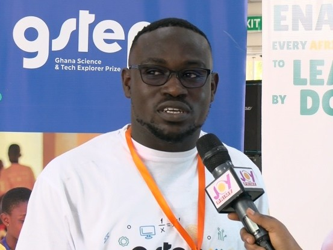

Dodoo Coding Club
A dynamic youth-centered initiative focused on inspiring and training the next generation of coders in Ghana. Through hands-on learning, mentorship, and community projects, the club equips students with the technical and problem-solving skills needed to thrive in today’s digital world.
- Hands-on coding workshops
- Community-driven projects
- Digital literacy for youth

Tech Mentorship Programs
A series of structured mentorship initiatives designed to guide young developers, students, and aspiring entrepreneurs toward achieving their career goals in technology. These programs provide mentorship, resources, and exposure to real-world tech experiences.

Ghana Science and Tech Explorer Prize
As a Business and Entrepreneurship Mentor, Prince has guided and supported teams of junior high school students in identifying market opportunities and developing business cases for the STEM products they create. His mentorship helps students merge scientific creativity with business thinking, preparing them to become the next generation of innovators.